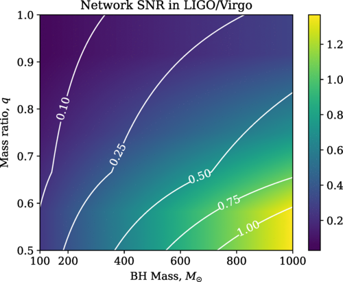

Summary
Gravitational waves (GWs) are generated by the mergers of dense,
compact objects like black holes (BHs) and neutron stars (NSs). This
provides an opportunity to study the strong field, highly dynamical
regime of Einstein’s theory of general relativity (GR) at higher
curvature scales than previous observations (1–6).
It is possible that at such scales modifications to GR may start
manifest. However, in order to detect such modifications, we need to
understand what deviations could look like in theories beyond GR, in
particular in the merger section of the signal in near equal mass
binaries, which are key targets of the LIGO-Virgo-KAGRA network of
detectors (and their future 3G successors). Such predictions necessitate
the use of numerical relativity (NR), in which the (modified) equations
of GR are evolved from an initial configuration several orbits before
merger, through the merger period and the subsequent “ringdown”, during
which the gravitational wave signal can be extracted near the
computational boundary.
Current waveforms are tested for consistency with GR by measuring
parameterised deviations to the merger, inspiral and ringdown phases
(7–11),
and not by comparison to any particular theories. If we obtain
predictions for specific models, we can check whether such parameterised
deviations are well-motivated and consistent in alternative theories of
gravity (1,12–17),
and the potential to extract model parameters from data.
There are many ways to modify GR, one of the simplest being to couple
an additional scalar degree of freedom, which may (if certain conditions
are satisfied) result in so-called “hairy” stationary black hole
solutions; that is, black holes with a stable, non trivial configuration
of the scalar field around them (see (18) for a review). An example of
this is the class of Horndeski models (19). Cubic Horndeski theories have
been studied in (21) and an implementation of this
is included in GRFolres. Another more general example within the
Horndeski models is the four-derivative scalar-tensor theory (4∂ST),
which is the most general theory with up to fourth powers of the
derivatives (but still second order equations of motion). Despite their
relative simplicity, they have lacked well-posed (and thus numerically
stable) formulations until relatively recently.
An important breakthrough was made in 2020 by Kov'acs and Reall, who
showed that Horndeski theories are indeed well-posed in a modified
version of the harmonic gauge (22,23) - a particular
coordinate system already used in NR. Subsequently, several specific
theories within these classes were probed in their highly dynamical and
fully non-linear regimes (24–27).
The extension of the results of (22,23) to the
alternative “singularity avoiding” coordinates in (28–30)
offers an alternative gauge in which to probe questions of
hyperbolicity, and may offer stability advantages for certain cases such
as unequal mass ratios, as studied in (27). Numerical work on these
theories is still in the early stages of development and many technical
details on their numerical implementation need to be further
investigated. Equally, many scientific questions, concerning our
accurate understanding of binary black holes’ phenomenology in
alternative theories of gravity and their implications for tests of GR,
also remain unanswered.
The goal of GRFolres is to meet this need for further research, and
to provide a model code to help others develop and test their own
implementations. The code is based on the publicly available NR code
GRChombo (31,32), which itself
uses the open source Chombo framework (33) for solving partial differential
equations (PDEs).
In the following sections we discuss the key features, motivations
and applications of the code.
Key features
GRFolres inherits many of the features of GRChombo and Chombo. Here
we list the key features. - Stable gauge evolution - The code implements
the modified moving puncture gauge that ensures a well posed evolution
in the weak coupling regime, as proposed in (28). The precise form of the
gauge and its parameters can be changed and the standard moving puncture
gauge is safely recovered by setting certain parameters to zero. -
Modified gravity theories - The currently available theories in the code
are 4∂ST and cubic Horndeski. The code is templated over the theory (in
the same way that GRChombo is templated over a matter class) so that it
can easily be changed without major code modifications. The code also
provides an implementation of 4∂ST without backreaction onto the metric
(but including the possibility of using the new gauge), to enable
comparison with previous works in the perturbative limit. - Accuracy -
The fields are evolved with a 4th order Runge-Kutta time integration and
their derivatives calculated with the same finite difference stencils
used in GRChombo (4th and 6th order are currently available). - Boundary
Conditions - GRFolres inherits all the available boundary conditions in
GRChombo, namely, extrapolating, Sommerfeld (radiative), reflective and
periodic. - Initial Conditions - The current examples use solutions that
approximately or trivially solve the modified energy and momentum
constraints of the theory. An elliptic solver for more general
configurations is under development, using a modified CTTK formalism
(34,35). -
Diagnostics - GRFolres has routines for monitoring the constraint
violation and calculating the energy densities associated with the
different scalar terms in the action, as discussed in (28–30).
Other diagnostics can be added as required. We also extract data for the
tensor and scalar gravitational waveforms. - C++ class structure -
Following the structure of GRChombo, the GRFolres code is also written
in C++ and uses object oriented programming (OOP) and templating. -
Parallelism - GRChombo uses hybrid OpenMP/MPI parallelism with explicit
vectorisation of the evolution equations via intrinsics, and is AVX-512
compliant. - Adaptive Mesh Refinement - The code inherits the flexible
AMR grid structure of Chombo, which provides Berger-Oliger style (36) AMR with
block-structured Berger-Rigoutsos grid generation (37). Depending on the problem, the user
may specify the refinement to be triggered by the additional degrees of
freedom, i.e. the scalar field, or those of the metric tensor.
Statement of Need
As far as we are aware there is currently no other publicly available
code that implements the 4∂ST theory of modified gravity or the cubic
Horndeski theory in 3+1-dimensional numerical relativity.
There is at least one private code, based on the PAMR/AMRD and HAD
(38,39) infrastructure,
that was used in the first works to successfully implement the modified
general harmonic gauge for 4∂ST (24–27).
Since this code uses a Generalised Harmonic Coordinates (GHC)
formulation, it necessitates excision of the interior of black holes,
which can be difficult to implement in practice. As a consequence, many
groups in the numerical relativity community have opted to use
singularity avoiding coordinates such as the BSSN (40–42),
Z4C (43,44) or CCZ4 (45,46)
formulations in the puncture gauge (47,48), which do not
require the excision of the interior of black holes from the
computational domain. In GRFolres, we use the results of (28–30)
to extend the well-posed formulations of modified gravity to singularity
avoiding coordinates. This provides an alternative gauge to the modified
GHC one used by other groups. Not only does this provide a valuable
comparison to their work, but also eliminates the need for excision.
There are also a number of 3+1-dimensional codes that implement the
equations for the additional scalar degree of freedom in
Einstein-scalar-Gauss-Bonnet without backreaction onto the metric
tensor, including one implementation using GRChombo (49), which we
have integrated into GRFolres to enable comparison between the methods.
In particular, Canuda (https://bitbucket.org/canuda) (50) which uses the
Einstein Toolkit (http://einsteintoolkit.org/), with its related Cactus
(http://cactuscode.org) (51,52) and Kranc
(http://kranccode.org) (53) infrastructure, was used in (50,54–57).
Another implementation is based on the Spectral Einstein Code or SpEC
(http://www.black-holes.org/SpEC.html) (58), as used in (59). Whilst
order-reduced methods like those in (12,49,50,54–57,59–62)
provide an estimate of the scalar dynamics and associated energy losses,
they may miss information about the fully non-linear impact on the
metric and suffer from the accumulation of secular errors over long
inspirals.
In spherical symmetry several codes have been developed that
implement Einstein-scalar-Gauss-Bonnet (a subset of the 4∂ST theory that
we include as an example in GRFolres). In particular, using the NRPy
framework (http://astro.phys.wvu.edu/bhathome) (63) in (60), and the private code of Ripley
& Pretorius in (64–68).
Spherical codes provide a useful testing ground in which coordinate
ambiguities can be avoided (64), but lack the generality required to
study objects with angular momentum, or binary mergers.
Research projects to
date using GRFolres
So far the code has been used to study a range of fundamental physics
problems, as listed here. - The test field case was used in (49) to model
the scalar waves produced during the ringdown stage of binary black hole
coalescence in Einstein-scalar-Gauss-Bonnet, and quantify the extent to
which current and future gravitational wave detectors could observe the
spectrum of scalar radiation emitted.

Contour plot of network signal-to-noise ratio (SNR) for the
scalar ringdown of a binary black hole (BBH) at 1 Gpc as observed by the
Virgo, Livingston and Hanford network of detectors at design
sensitivity. Taken from (49).
- The regime of validity of effective field theory in collapse and
binary evolutions in cubic Horndeski theories were studied in [(20);Figueras:2021abd]. It was
found that the mismatch of the gravitational wave strain can be as large
as 10%–13% in the Advanced LIGO mass range for such theories.
![Energy density (in blue) of the scalar field surrounding the binary black holes for the Horndeski theory at a representative instant of time during the inspiral phase. The apparent horizon of the black holes is shown in orange. The region where the weak coupling conditions are larger than one is depicted in brown. Taken from [@Figueras:2021abd].](Figures/EnergyDensity_and_WFC.png)
Energy density (in blue) of the scalar field surrounding the
binary black holes for the Horndeski theory at a representative instant
of time during the inspiral phase. The apparent horizon of the black
holes is shown in orange. The region where the weak coupling conditions
are larger than one is depicted in brown. Taken from (21).
- In the work (28), the code was developed and
tested, with waveforms for shift-symmetric theories of
Einstein-scalar-Gauss-Bonnet gravity produced for equal mass binaries.
![Modified gravity waveforms in 4∂ST with a shift-symmetric coupling. Taken from [@AresteSalo:2022hua].](Figures/all_waves.png)
Modified gravity waveforms in 4∂ST with a shift-symmetric
coupling. Taken from (28).
- In the work (29), the studies were extended
to binary mergers in theories with spin-induced scalarisation. The
clouds formed are dumbbell-like in shape.
![The time evolution of the density of the scalar cloud that develops in Einstein-scalar-Gauss-Bonnet gravity with an exponential coupling, resulting in spin-induced scalarisation. Taken from [@AresteSalo:2023mmd].](Figures/rhophi.png)
The time evolution of the density of the scalar cloud that
develops in Einstein-scalar-Gauss-Bonnet gravity with an exponential
coupling, resulting in spin-induced scalarisation. Taken from (29).
- In the work (30), the dependence of the
conditions for hyperbolicity and weak coupling were studied for
spin-induced scalarisation, and the critical thresholds found for a
number of cases.
![The time evolution of the determinant of the effective metric in a case of spin-induced scalarisation. When the determinant is negative (in black), the theory has become ill-posed. Taken from [@Doneva:2023oww].](Figures/discriminant_beta200.png)
The time evolution of the determinant of the effective metric in
a case of spin-induced scalarisation. When the determinant is negative
(in black), the theory has become ill-posed. Taken from (30).
Acknowledgements
We thank the entire GRChombo (www.grchombo.org) collaboration for
their support and code development work. PF and KC are supported by an
STFC Research Grant ST/X000931/1 (Astronomy at Queen Mary 2023-2026). PF
is supported by a Royal Society University Research Fellowship
No. URFR201026, and No. RFERE210291. KC is supported by an STFC Ernest
Rutherford fellowship, project reference ST/V003240/1. LAS is supported
by a QMUL Ph.D. scholarship. DD acknowledges financial support via an
Emmy Noether Research Group funded by the German Research Foundation
(DFG) under grant no. DO 1771/1-1. LR is supported by a Royal Society
Renewal Grant, No. URFR201026, and a Research Expenses Enhancement
Award, No. RFERE210291.
Development of the code used in this work utilised the ARCHER2 UK
National Supercomputing Service (https://www.archer2.ac.uk) under the
EPSRC HPC project no. E775, the CSD3 cluster in Cambridge under Projects
No. DP128. The Cambridge Service for Data Driven Discovery (CSD3),
partially operated by the University of Cambridge Research Computing on
behalf of the STFC DiRAC HPC Facility. The DiRAC component of CSD3 is
funded by BEIS capital via STFC capital Grants No. ST/P002307/1 and
No. ST/ R002452/1 and STFC operations Grant No. ST/R00689X/1. DiRAC is
part of the National e-Infrastructure (www.dirac.ac.uk). Calculations
were also performed using the Sulis Tier 2 HPC platform hosted by the
Scientific Computing Research Technology Platform at the University of
Warwick. Sulis is funded by EPSRC Grant EP/T022108/1 and the HPC
Midlands+ consortium. This research has also utilised Queen Mary’s
Apocrita HPC facility, supported by QMUL Research-IT. This study is in
part financed by the European Union-NextGenerationEU, through the
National Recovery and Resilience Plan of the Republic of Bulgaria,
project No. BG-RRP-2.004-0008-C01. We acknowledge Discoverer PetaSC and
EuroHPC JU for awarding this project access to Discoverer supercomputer
resources.
References
2.
Perkins SE, Yunes N, Berti E.
Probing Fundamental Physics with Gravitational Waves: The
Next Generation. Phys Rev D [Internet]. 2021;103(4):044024.
Available from:
https://arxiv.org/abs/2010.09010
4.
Gnocchi G, Maselli A, Abdelsalhin T, Giacobbo
N, Mapelli M.
Bounding alternative theories of
gravity with multiband GW observations. Phys Rev D [Internet].
2019;100(6):064024. Available from:
https://arxiv.org/abs/1905.13460
5.
Barack L et al.
Black
holes, gravitational waves and fundamental physics: a roadmap.
Class Quant Grav [Internet]. 2019;36(14):143001. Available from:
https://arxiv.org/abs/1806.05195
6.
Baker T, Psaltis D, Skordis C.
Linking Tests of Gravity On All Scales: from the
Strong-Field Regime to Cosmology. Astrophys J [Internet].
2015;802:63. Available from:
https://arxiv.org/abs/1412.3455
7.
Maggio E, Silva HO, Buonanno A, Ghosh A.
Tests of general relativity in the nonlinear regime: a
parametrized plunge-merger-ringdown gravitational waveform model.
2022 Dec; Available from:
https://arxiv.org/abs/2212.09655
8.
Krishnendu NV, Ohme F.
Testing General Relativity with Gravitational Waves: An
Overview. Universe [Internet]. 2021;7(12):497. Available from:
https://arxiv.org/abs/2201.05418
10.
Carson Z, Yagi K.
Parametrized and inspiral-merger-ringdown consistency
tests of gravity with multiband gravitational wave observations.
Phys Rev D [Internet]. 2020;101(4):044047. Available from:
https://arxiv.org/abs/1911.05258
11.
Cornish N, Sampson L, Yunes N, Pretorius F.
Gravitational Wave Tests of General Relativity with
the Parameterized Post-Einsteinian Framework. Phys Rev D
[Internet]. 2011;84:062003. Available from:
https://arxiv.org/abs/1105.2088
12.
Okounkova M, Isi M, Chatziioannou K, Farr WM.
Gravitational wave inference on a
numerical-relativity simulation of a black hole merger beyond general
relativity. Phys Rev D [Internet]. 2023;107(2):024046. Available
from:
https://arxiv.org/abs/2208.02805
13.
Johnson-McDaniel NK, Ghosh A, Ghonge S, Saleem
M, Krishnendu NV, Clark JA.
Investigating the
relation between gravitational wave tests of general relativity.
Phys Rev D [Internet]. 2022;105(4):044020. Available from:
https://arxiv.org/abs/2109.06988
14.
Shiralilou B, Hinderer T, Nissanke SM, Ortiz N,
Witek H.
Post-Newtonian gravitational and scalar
waves in scalar-GaussBonnet gravity. Class Quant Grav [Internet].
2022;39(3):035002. Available from:
https://arxiv.org/abs/2105.13972
15.
Perkins SE, Nair R, Silva HO, Yunes N.
Improved gravitational-wave constraints on higher-order
curvature theories of gravity. Phys Rev D [Internet].
2021;104(2):024060. Available from:
https://arxiv.org/abs/2104.11189
16.
Carson Z, Yagi K.
Probing
Einstein-dilaton Gauss-Bonnet Gravity with the inspiral and ringdown of
gravitational waves. Phys Rev D [Internet]. 2020;101(10):104030.
Available from:
https://arxiv.org/abs/2003.00286
17.
Carson Z, Yagi K.
Probing
string-inspired gravity with the inspiralmergerringdown consistency
tests of gravitational waves. Class Quant Grav [Internet].
2020;37(21):215007. Available from:
https://arxiv.org/abs/2002.08559
20.
Figueras P, França T.
Gravitational Collapse in Cubic Horndeski
Theories. Class Quant Grav [Internet]. 2020;37(22):225009.
Available from:
https://arxiv.org/abs/2006.09414
21.
Figueras P, França T.
Black hole binaries in cubic Horndeski theories.
Phys Rev D [Internet]. 2022;105(12):124004. Available from:
https://arxiv.org/abs/2112.15529
22.
Kovács ÁD, Reall HS.
Well-Posed Formulation of Scalar-Tensor Effective Field
Theory. Phys Rev Lett [Internet]. 2020;124(22):221101. Available
from:
https://arxiv.org/abs/2003.04327
23.
Kovács ÁD, Reall HS.
Well-posed formulation of Lovelock and Horndeski
theories. Phys Rev D [Internet]. 2020;101(12):124003. Available
from:
https://arxiv.org/abs/2003.08398
24.
East WE, Ripley JL.
Evolution of Einstein-scalar-Gauss-Bonnet gravity using a
modified harmonic formulation. Phys Rev D [Internet].
2021;103(4):044040. Available from:
https://arxiv.org/abs/2011.03547
25.
East WE, Ripley JL.
Dynamics of Spontaneous Black Hole Scalarization and
Mergers in Einstein-Scalar-Gauss-Bonnet Gravity. Phys Rev Lett
[Internet]. 2021;127(10):101102. Available from:
https://arxiv.org/abs/2105.08571
26.
East WE, Pretorius F.
Binary neutron star mergers in
Einstein-scalar-Gauss-Bonnet gravity. Phys Rev D [Internet].
2022;106(10):104055. Available from:
https://arxiv.org/abs/2208.09488
27.
Corman M, Ripley JL, East WE.
Nonlinear studies of binary black hole mergers in
Einstein-scalar-Gauss-Bonnet gravity. Phys Rev D [Internet].
2023;107(2):024014. Available from:
https://arxiv.org/abs/2210.09235
28.
Aresté Saló L, Clough K, Figueras P.
Well-Posedness of the Four-Derivative Scalar-Tensor
Theory of Gravity in Singularity Avoiding Coordinates. Phys Rev
Lett [Internet]. 2022;129(26):261104. Available from:
https://arxiv.org/abs/2208.14470
29.
Aresté Saló L, Clough K, Figueras P.
A CCZ4 formulation for Einstein-Gauss-Bonnet gravity and
4∂ST in d + 1 spacetime dimensions.
2023 Jun; Available from:
https://arxiv.org/abs/2306.14966
30.
Doneva DD, Aresté Saló L, Clough K, Figueras P,
Yazadjiev SS.
Testing the limits of
scalar-Gauss-Bonnet gravity through nonlinear evolutions of spin-induced
scalarization. 2023 Jul; Available from:
https://arxiv.org/abs/2307.06474
31.
Clough K, Figueras P, Finkel H, Kunesch M, Lim
EA, Tunyasuvunakool S.
GRChombo : Numerical
Relativity with Adaptive Mesh Refinement. Class Quant Grav
[Internet]. 2015;32(24):245011. Available from:
https://arxiv.org/abs/1503.03436
32.
Andrade T, Figueras P, Sperhake U.
Evidence for violations of Weak Cosmic Censorship in
black hole collisions in higher dimensions. JHEP [Internet].
2022;03:111. Available from:
https://arxiv.org/abs/2011.03049
33.
Adams M et al. Chombo
software package for AMR applications - design document. 2015
Dec;
34.
Aurrekoetxea JC, Clough K, Lim EA.
CTTK: a new method to solve the initial data constraints
in numerical relativity. Class Quant Grav [Internet].
2023;40(7):075003. Available from:
https://arxiv.org/abs/2207.03125
35.
Brady SE, Aresté Saló L, Clough K, Figueras P,
S AP.
Solving the initial conditions problem for
modified gravity theories. 2023 Aug; Available from:
https://arxiv.org/abs/2308.16791
38.
East WE, Pretorius F, Stephens BC.
Hydrodynamics in full general relativity with
conservative AMR. Phys Rev D [Internet]. 2012;85:124010.
Available from:
https://arxiv.org/abs/1112.3094
39.
Neilsen D, Hirschmann EW, Anderson M, Liebling
SL.
Adaptive Mesh Refinement and Relativistic
MHD. In:
11th Marcel Grossmann Meeting on
General Relativity [Internet]. 2007. p. 1579–81. Available from:
https://arxiv.org/abs/gr-qc/0702035
42.
Baumgarte TW, Shapiro SL.
On the numerical integration of Einstein’s field
equations. Phys Rev D [Internet]. 1998;59:024007. Available from:
https://arxiv.org/abs/gr-qc/9810065
43.
Bona C, Ledvinka T, Palenzuela C, Zacek M.
General covariant evolution formalism for numerical
relativity. Phys Rev D [Internet]. 2003;67:104005. Available
from:
https://arxiv.org/abs/gr-qc/0302083
44.
Bernuzzi S, Hilditch D.
Constraint violation in free evolution schemes: Comparing
BSSNOK with a conformal decomposition of Z4. Phys Rev D
[Internet]. 2010;81:084003. Available from:
https://arxiv.org/abs/0912.2920
45.
Alic D, Bona-Casas C, Bona C, Rezzolla L,
Palenzuela C.
Conformal and covariant formulation
of the Z4 system with constraint-violation damping. Phys Rev D
[Internet]. 2012;85:064040. Available from:
https://arxiv.org/abs/1106.2254
46.
Alic D, Kastaun W, Rezzolla L.
Constraint damping of the conformal and covariant
formulation of the Z4 system in simulations of binary neutron
stars. Phys Rev D [Internet]. 2013;88(6):064049. Available from:
https://arxiv.org/abs/1307.7391
47.
Campanelli M, Lousto CO, Marronetti P,
Zlochower Y.
Accurate evolutions of orbiting
black-hole binaries without excision. Phys Rev Lett [Internet].
2006;96:111101. Available from:
https://arxiv.org/abs/gr-qc/0511048
48.
Baker JG, Centrella J, Choi DI, Koppitz M,
Meter J van.
Gravitational wave extraction from an
inspiraling configuration of merging black holes. Phys Rev Lett
[Internet]. 2006;96:111102. Available from:
https://arxiv.org/abs/gr-qc/0511103
49.
Evstafyeva T, Agathos M, Ripley JL.
Measuring the ringdown scalar polarization of
gravitational waves in Einstein-scalar-Gauss-Bonnet gravity. Phys
Rev D [Internet]. 2023;107(12):124010. Available from:
https://arxiv.org/abs/2212.11359
50.
Witek H, Gualtieri L, Pani P, Sotiriou TP.
Black holes and binary mergers in scalar
Gauss-Bonnet gravity: scalar field dynamics. Phys Rev D
[Internet]. 2019;99(6):064035. Available from:
https://arxiv.org/abs/1810.05177
51.
Loffler F et al.
The
Einstein Toolkit: A Community Computational Infrastructure for
Relativistic Astrophysics. Class Quant Grav [Internet].
2012;29:115001. Available from:
https://arxiv.org/abs/1111.3344
52.
Schnetter E, Hawley SH, Hawke I.
Evolutions in 3-D numerical relativity using fixed mesh
refinement. Class Quant Grav [Internet]. 2004;21:1465–88.
Available from:
https://arxiv.org/abs/gr-qc/0310042
53.
Husa S, Hinder I, Lechner C.
Kranc: A Mathematica application to generate numerical
codes for tensorial evolution equations. Comput Phys Commun
[Internet]. 2006;174:983–1004. Available from:
https://arxiv.org/abs/gr-qc/0404023
54.
Richards C, Dima A, Witek H.
Black Holes in Massive Dynamical Chern-Simons gravity:
scalar hair and quasibound states at decoupling. 2023 May;
Available from:
https://arxiv.org/abs/2305.07704
55.
Elley M, Silva HO, Witek H, Yunes N.
Spin-induced dynamical scalarization, descalarization,
and stealthness in scalar-Gauss-Bonnet gravity during a black hole
coalescence. Phys Rev D [Internet]. 2022;106(4):044018. Available
from:
https://arxiv.org/abs/2205.06240
56.
R.
AHK, Most ER, Noronha J, Witek H, Yunes N.
How do
axisymmetric black holes grow monopole and dipole hair? Phys Rev
D [Internet]. 2023;107(10):104047. Available from:
https://arxiv.org/abs/2212.02039
57.
Silva HO, Witek H, Elley M, Yunes N.
Dynamical Descalarization in Binary Black Hole
Mergers. Phys Rev Lett [Internet]. 2021;127(3):031101. Available
from:
https://arxiv.org/abs/2012.10436
58.
Pfeiffer HP, Kidder LE, Scheel MA, Teukolsky
SA.
A Multidomain spectral method for solving
elliptic equations. Comput Phys Commun [Internet].
2003;152:253–73. Available from:
https://arxiv.org/abs/gr-qc/0202096
59.
Okounkova M.
Numerical
relativity simulation of GW150914 in Einstein dilaton Gauss-Bonnet
gravity. Phys Rev D [Internet]. 2020;102(8):084046. Available
from:
https://arxiv.org/abs/2001.03571
60.
Doneva DD, Vañó-Viñuales A, Yazadjiev SS.
Dynamical descalarization with a jump during a black hole
merger. Phys Rev D [Internet]. 2022;106(6):L061502. Available
from:
https://arxiv.org/abs/2204.05333
61.
Okounkova M, Stein LC, Moxon J, Scheel MA,
Teukolsky SA.
Numerical relativity simulation of
GW150914 beyond general relativity. Phys Rev D [Internet].
2020;101(10):104016. Available from:
https://arxiv.org/abs/1911.02588
62.
Okounkova M, Stein LC, Scheel MA, Teukolsky SA.
Numerical binary black hole collisions in dynamical
Chern-Simons gravity. Phys Rev D [Internet]. 2019;100(10):104026.
Available from:
https://arxiv.org/abs/1906.08789
63.
Ruchlin I, Etienne ZB, Baumgarte TW.
SENR/NRPy+: Numerical Relativity in Singular Curvilinear
Coordinate Systems. Phys Rev D [Internet]. 2018;97(6):064036.
Available from:
https://arxiv.org/abs/1712.07658
64.
R
AHK, Ripley JL, Yunes N.
Where and why does
Einstein-scalar-Gauss-Bonnet theory break down? Phys Rev D
[Internet]. 2023;107(4):044044. Available from:
https://arxiv.org/abs/2211.08477
65.
Ripley JL, Pretorius F.
Dynamics of a ℤ2 symmetric EdGB gravity in
spherical symmetry. Class Quant Grav [Internet].
2020;37(15):155003. Available from:
https://arxiv.org/abs/2005.05417
66.
Ripley JL, Pretorius F.
Gravitational collapse in Einstein dilaton-GaussBonnet
gravity. Class Quant Grav [Internet]. 2019;36(13):134001.
Available from:
https://arxiv.org/abs/1903.07543
67.
Ripley JL, Pretorius F.
Hyperbolicity in Spherical Gravitational Collapse in a
Horndeski Theory. Phys Rev D [Internet]. 2019;99(8):084014.
Available from:
https://arxiv.org/abs/1902.01468
68.
Ripley JL, Pretorius F.
Scalarized Black Hole dynamics in Einstein dilaton
Gauss-Bonnet Gravity. Phys Rev D [Internet]. 2020;101(4):044015.
Available from:
https://arxiv.org/abs/1911.11027